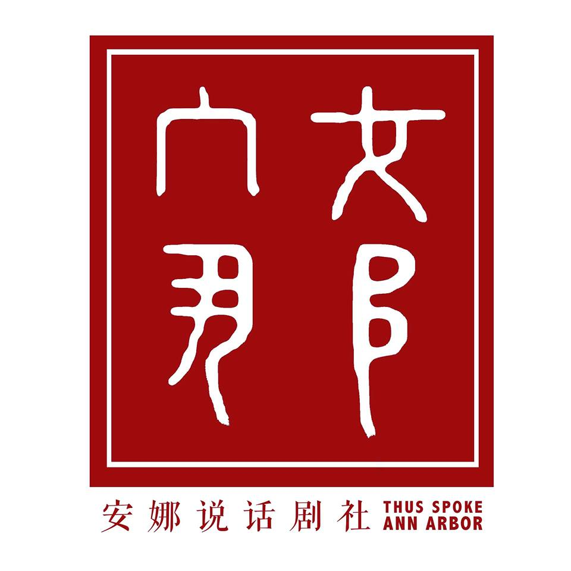

In order for the alumni of Thus Spoke Ann Arbor, a Chinese Theater Club on U of M campus to have a online space to commemorate the great work and memories they had during their time in Ann Arbor, I created this website to keep the most precious photographs on file.
At the Center for Campus Involvement, the leaders of higher education are interested in knowing students’ involvement on campus as it relates to their racial, ethnic, and cultural background. After collecting data from the student body, I analyzed and created this infographic.